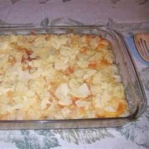

A simple meat and vegetable casserole that fed the teenagers in our family.
Preheat the oven to 350 degrees F (175 degrees C).
Crumble the ground beef into a large skillet over medium-high heat. Cook and stir until evenly browned. Drain off the grease. Stir in the green beans and corn, and cook for a few minutes. Mix in the cans of soup until well blended. Transfer to a 9x13 inch baking dish. Top with shredded cheese and crushed potato chips.
Bake for about 15 minutes in the preheated oven, until the cheese melts and the chips are toasted. If you like crispier chips, you can sprinkle them on top after the cheese has melted, and bake for another 5 minutes.